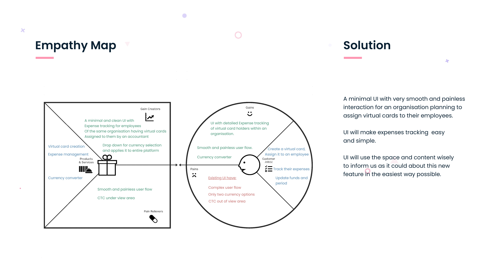
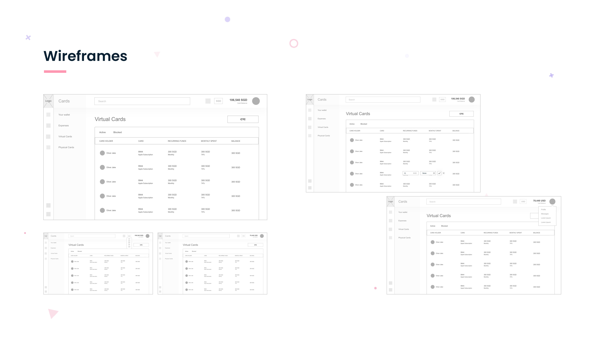
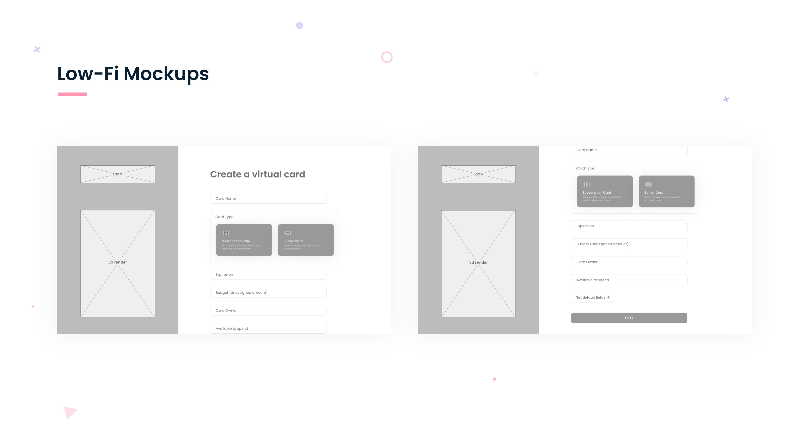
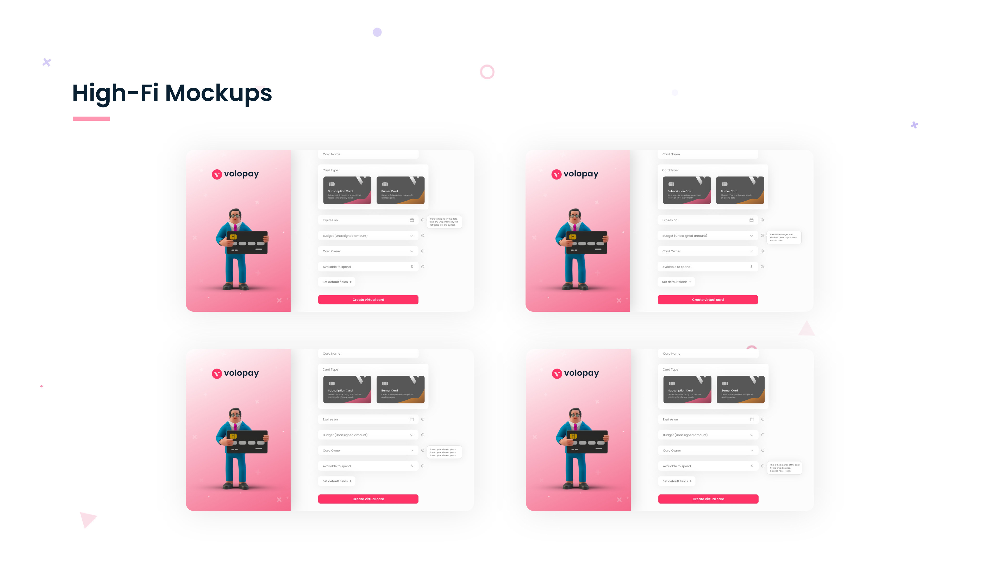

VOLOPAY · FINTECH · B2B SAAS · UI/UX CASE STUDY
Volopay — Virtual Cards
Enterprise accountants were navigating a multi-step, context-switching workflow to issue a single virtual card. This project collapsed that into a clean single-panel creation flow with multi-currency support and always-visible cost-to-company data.
View full PDF ↗
01 — OVERVIEW
Simplifying enterprise spend management
Volopay is a B2B spend management platform serving finance and accounting teams at mid-market and enterprise companies. The Virtual Cards feature lets accountants issue disposable or recurring virtual cards to employees — controlling spend limits, currencies, and expiry dates from a single dashboard.
The existing flow required navigating across multiple screens, switching context between the card list and creation form, and manually calculating cost-to-company for multi-currency cards. The redesign collapsed this into a single right-panel drawer with inline currency conversion.
02 — PROBLEM
The friction in the existing flow
"Creating a virtual card required accountants to leave the card list, navigate to a form, fill in 8+ fields, calculate currency conversion manually, and return to the list — every time."
01
Context switching
Leaving the card list to create a new card broke mental flow — users lost their place on return.
02
No currency conversion
Multi-currency cards required accountants to manually calculate cost-to-company in home currency.
03
Excessive form fields
The creation form had 8+ fields shown simultaneously — overwhelming for a routine task.
04
No spend visibility
Accountants couldn't see team spend limits in context while setting an individual card limit.
03 — USERS
Who uses Volopay's Virtual Cards
Primary: Enterprise accountant
- Finance or accounting team member at a 100–1000 person company
- Issues 5–30 virtual cards per week for employees and vendors
- Works across multiple currencies and teams simultaneously
- Values speed and accuracy — errors in limits cost real money
- Frustrated by repetitive, high-friction workflows
Secondary: Finance manager
- Approves cards issued by accountants
- Needs spend visibility across teams and currencies
- Reviews historical card usage and limits
- Wants audit trail and reporting built in
- Less frequent user, higher stakes decisions
04 — RESEARCH
Understanding the workflow
We conducted moderated usability sessions with 12 accountants across 5 companies using the existing Volopay dashboard. We observed their card creation workflows, collected think-aloud data, and mapped where they encountered friction, errors, and confusion.


Wireframe explorations — testing single panel vs. multi-step modal approaches
05 — KEY INSIGHTS
What shaped the design direction
Context is the most valuable asset in a dashboard
Accountants wanted to see the card list while creating — to check existing limits and avoid duplicates. A drawer panel, not a full-page form, preserved this context.
Currency conversion should be invisible work
Every accountant we observed stopped to open a calculator or exchange-rate tab. Inline conversion, shown in real-time as limit values are typed, removed this entirely.
Progressive disclosure reduces overwhelm without losing depth
Showing the 3 most common fields upfront (employee, limit, currency), with advanced options available on expand, made the form feel simple without removing power-user functionality.
06 — DESIGN PROCESS
From wireframes to final UI
We tested three structural approaches: a full-page form (rejected — loses context), a centred modal (rejected — still blocks the list), and a right-panel drawer (chosen — keeps context while enabling creation). Each approach was wireframed and tested with 4 accountants before moving to hi-fi.

Three structural approaches tested before selecting the drawer panel
Discovery
Workflow mapping + pain point clustering
Wireframes
3 structural approaches tested
Prototype
Interactive Figma prototype
Testing
Moderated sessions with accountants
Hi-Fi
Final screens + dev handoff
07 — FINAL SOLUTION
The drawer panel that changed the workflow
The final solution is a right-side drawer panel that overlays the card list — preserving context while enabling creation. Inline currency conversion shows cost-to-company in real-time. Progressive disclosure keeps the form minimal by default, expandable for advanced settings.

Final drawer panel — inline conversion, spend visibility, progressive disclosure
08 — BEFORE VS AFTER
The workflow transformation
Before
- Navigate away from card list to access creation form
- Fill in 8+ fields on a full-page form
- Manually calculate currency conversion
- Return to card list — context lost
- No visibility of existing team limits while setting new limits
After
- Create card without leaving the card list view
- 3 primary fields upfront, advanced settings on expand
- Inline real-time currency conversion as you type
- Card list remains visible throughout creation
- Team spend summary visible in context
09 — BUSINESS IMPACT
Outcomes
10 — KEY LEARNINGS
What this project taught me
B2B design is about workflow continuity, not just task completion
Enterprise users have mental models shaped by their entire workflow — not just the current screen. Preserving context (keeping the card list visible) was more valuable than any individual UX improvement.
Inline automation earns trust faster than explanatory copy
Showing the converted amount update in real-time as users typed built confidence immediately — without requiring a tooltip, explainer, or hover state.
Progressive disclosure is a policy, not just a pattern
It worked here because we had clear data on what 80% of users needed. Without that research grounding, it risks hiding important controls users can't find. Know your users before hiding things.
Enterprise products earn their complexity. Good B2B design removes the complexity users shouldn't have to manage.